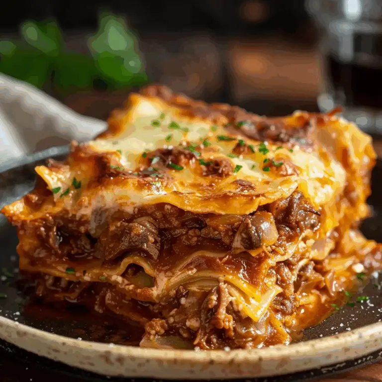

This recipe is inspired by the short rib lasagna recipes from the tastyfork.com and from the salty cooker . My intention is to streamline the recipes so that it is removed from any superfluous description that usually plagues recipe blog sites. This recipe will only include necessary ingredients and directions.
That being said, this is one of the most delicious pasta recipes I've ever had the pleasure of eating. It takes a decent amount of preparation, but it is well worth the effort. The result is an instant crow-pleaser and will have you wishing you made additional servings.